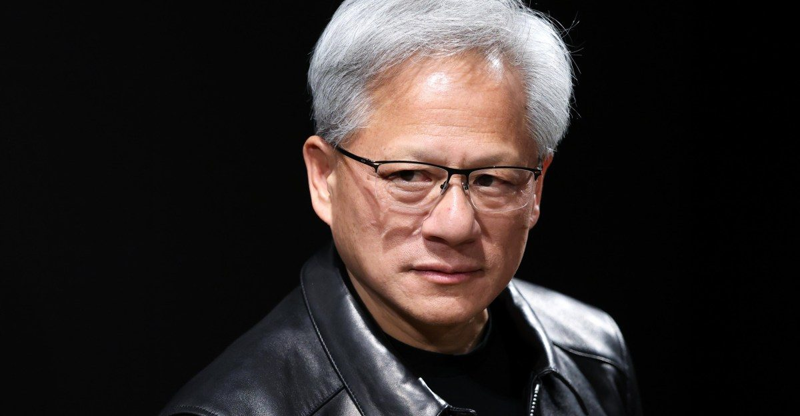

Jensen Huang indrømmer affære med formodet kinesisk spion – Nvidias bestyrelse indleder undersøgelse
Nvidias topchef undskylder i et brev til de ansatte, mens Kongressen vil afhøre ham, og aktien faldt omkring 3 % i handlen efter lukketid.

Nvidias bestyrelse har søndag indledt en uafhængig undersøgelse af Jensen Huangs forhold til Alice Huang, direktør i det Singapore-baserede Megaspeed. Ifølge et amerikansk efterretningsnotat, som New York Times har beskrevet, blev hun rekrutteret af Kinas efterretningstjeneste MSS for at skaffe oplysninger om Nvidia-chefen. USA har mistænkt Megaspeed for at hjælpe Kina uden om forbuddet mod salg af AI-chips.
I et brev til medarbejderne skriver Huang: »I was unfaithful to my wife« og »I take full responsibility«. Han støtter undersøgelsen og vil fortsætte som topchef. Bestyrelsen skriver, at den ikke har grund til at tro, at nationale sikkerheds- eller Nvidia-hemmeligheder er kompromitteret.
Tre republikanske udvalgsformænd har bedt Huang om en lukket briefing den 18. november, dagen efter Nvidias regnskab for tredje kvartal. Demokrater kræver også høringer. Præsident Trump kalder Huang »honorable«. Nvidia faldt omkring 3 % i handlen efter lukketid og i perpetual futures Terminskontrakter uden udløbsdato, som handles døgnet rundt, også når børsen er lukket. Her viste de, at investorerne prissatte Nvidia omkring 3 % lavere allerede søndag, før børsen åbnede. ifølge Reuters.
Kilde: CNBC · Læs mere →